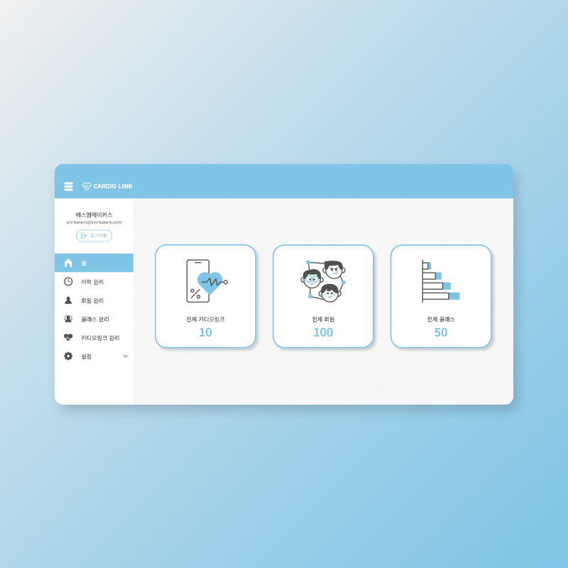

에스엠메이커스
에스엠메이커스 프로젝트는 그룹으로 운동할때 사용할 내부 인트라넷 구축 프로젝트입니다.
회원, 수업, 심박수 정보 등을 관리할 수 있습니다.
이전 직장이었던 웹에이전시에서 디자이너, 개발자와 협업을 통해 제작되었으며, 단독 퍼블리싱으로 진행했습니다.
최종 납품이 완료되어 기업에서 사용중이며 VISIT SITE를 누를시 확인용 포트폴리오 페이지로 이동합니다.
*작업방법
-
하드코딩 / 적응형
*기여도

기획
디자인
퍼블리싱
100%
100%
개발
COMMENT
*개요
-
그룹운동 관리 인트라넷
*이력관리
-
날짜별로 이력을 조회할 수 있습니다.
-
회원의 운동 정보는 chart.js 라이브러리를 사용하여 표현했습니다. (막대그래프는 직접 코딩)
*회원관리
-
특정 부분에서만 스크롤이 되도록 영역을 잡았습니다.
-
각 회원의 정보를 수정하는 폼을 제작했습니다.
*클래스 관리
-
클래스 정보를 수정할 수 있는 폼을 제작했습니다.
*운동 과정
-
클래스 관리 > 운동 클릭 > 운동시작 클릭
-
운동을 하는중 회원들의 심박수, 심박존, 칼로리 등을 실시간으로 확인할 수 있습니다.(워치 연동)